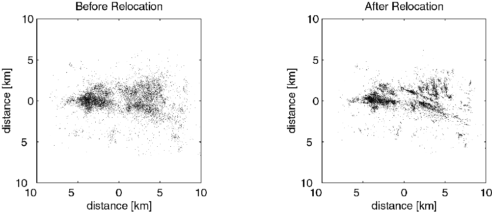
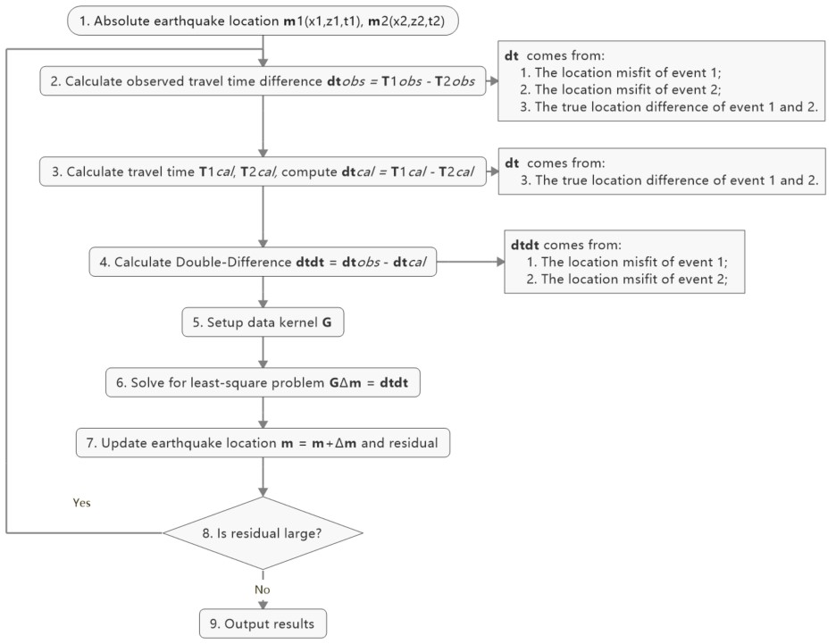

Double-Difference Earthquake Relocation
Introduction
Double-difference earthquake relocation algorithm was developed to improve the location accuracy in the presence of measurement uncertainties when we locate earthquakes in the previous tutorial. It is based on the iterative least-square method, using the time difference between observed and predicted phase arrivals for event pairs recorded by a common station, some uncertainties can be canceled to derive high-accuracy hypocenter locations over large distance. Figure below shows a comparison of ~10,000 earthquake locations (left panel) and double-difference locations (right panel) during the 1997 seismic crisis in the Long Valley caldera (Waldhauser, 2001).
In this tutorial, we’ll go through the powerful earthquake double-difference location method. To better convey the key conception of the method, we simplify the model to avoid it runs too complicated to be understood. We’ll use:
one-layer homogeneous velocity model to get rid of complicated ray-tracing.
2-D X-Z plane rather than 3-D X-Y-Z to decrease complexity
P arrivals only
After this tutorial, besides the understanding of key concepts in Double-Difference location, you will also find that model expand from 2-D to 3-D, from one-layer to multi-layers, from P to P&S arrivals, the key processing remains the same.
Note
Contents of this tutorial
Initiation process
Double difference method
Iterative double-difference method
Authors: ZI Jinping, SONG Zilin, Earth Science Sytem Program, CUHK. Testers, XIA Zhuoxuan, Earth Science Sytem Program, CUHK.
Initiation
Preparation for Environment
import numpy as np
import time
import matplotlib.pyplot as plt
from matplotlib.patches import Polygon
from scipy.sparse.linalg import lsqr
from scipy.sparse import csc_matrix
Note
def iter_loc(hyc_loop,stas,d,V,niter=10):
"""
Iterative aboslute earthquake location using least-square method
"""
k = 0
while k <= niter:
dcal = np.zeros((d.shape[0],1))
for i in range(d.shape[0]):
dx = stas[i,0]-hyc_loop[0]
dz = stas[i,1]-hyc_loop[1]
dcal[i,0] = np.sqrt(dx**2+dz**2)/V+hyc_loop[2]
delta_d = d - dcal
e2 = 0
for i in range(delta_d.shape[0]):
e2 += delta_d[i,0]**2
print(f"Iteration {format(k,'2d')} square error: ",format(e2,'13.8f'))
# >>>>> Build G matrix >>>>>>
G = np.zeros((d.shape[0],3))
G[:,2]=1
for i in range(d.shape[0]):
for j in range(2):
denomiter = np.sqrt((hyc_loop[0]-stas[i,0])**2+(hyc_loop[1]-stas[i,1])**2)
G[i,j]=(hyc_loop[j]-stas[i,j])/denomiter/V
# >>>>> Invert the m value >>>>
GTG = np.matmul(G.T,G)
GTG_inv = np.linalg.inv(GTG)
GTG_inv_GT = np.matmul(GTG_inv,G.T)
delta_m = np.matmul(GTG_inv_GT,delta_d)
# >>>>> Update the hypocenter loop >>>>>
hyc_loop = np.add(hyc_loop,delta_m.ravel())
k = k+1
# >>>>> End the loop if error is small >>>>>
if e2<0.00000001:
break
sigma_d = np.std(delta_d)
var = sigma_d**2*(d.shape[0])/(d.shape[0]-4)
sigma_m2 = var * GTG_inv
return hyc_loop, sigma_m2
def present_loc_results(hyc,sig_square=None,std_fmt='.2f'):
"""
Print earthquake location results
"""
_x = format(np.round(hyc[0],4),format("6.2f"))
_z = format(np.round(hyc[1],4),format("6.2f"))
_t = format(np.round(hyc[2],4),format("6.2f"))
if not isinstance(sig_square,np.ndarray):
print("x = ",_x," km")
print("z = ",_z," km")
print("t = ",_t," s")
else:
stdx = sig_square[0,0]**0.5
_stdx = format(np.round(stdx,4),std_fmt)
stdz = sig_square[1,1]**0.5
_stdz = format(np.round(stdz,4),std_fmt)
stdt = sig_square[2,2]**0.5
_stdt = format(np.round(stdt,4),std_fmt)
print("x = ",_x,"±",_stdx," km")
print("z = ",_z,"±",_stdz," km")
print("t = ",_t,"±",_stdt," s")
def matrix_show(*args,**kwargs):
"""
Show matrix values in grids shape
Parameters:cmap="cool",gridsize=0.6,fmt='.2f',label_data=True
"""
ws = []
H = 0
str_count = 0
ndarr_count = 0
new_args = []
for arg in args:
if isinstance(arg,str):
new_args.append(arg)
continue
if isinstance(arg,list):
arg = np.array(arg)
if len(arg.shape)>2:
raise Exception("Only accept 2D array")
if len(arg.shape) == 1:
n = arg.shape[0]
tmp = np.zeros((n,1))
tmp[:,0] = arg.ravel()
arg = tmp
h,w = arg.shape
if h>H:
H=h
ws.append(w)
new_args.append(arg)
ndarr_count += 1
W = np.sum(ws)+len(ws) # text+matrix+text+...+matrix+text
if W<0:
raise Exception("No matrix provided!")
fmt = '.2f'
grid_size = 0.6
cmap = 'cool'
label_data = True
for arg in kwargs:
if arg == "fmt":
fmt = kwargs[arg]
if arg == 'grid_size':
grid_size = kwargs[arg]
if arg == 'cmap':
cmap = kwargs[arg]
if arg == 'label_data':
label_data = kwargs[arg]
fig = plt.figure(figsize=(W*grid_size,H*grid_size))
gs = fig.add_gridspec(nrows=H,ncols=W)
wloop = 0
matrix_id = 0
for arg in new_args:
if isinstance(arg,str):
ax = fig.add_subplot(gs[0:H,wloop-1:wloop])
ax.axis("off")
ax.set_xlim(0,1)
ax.set_ylim(0,H)
ax.text(0.5,H/2,arg,horizontalalignment='center',verticalalignment='center')
if isinstance(arg,np.ndarray):
h,w = arg.shape
hlow = int(np.round((H-h+0.01)/2)) # Find the height grid range
hhigh = hlow+h
wlow = wloop
whigh = wlow+w
# print("H: ",H,hlow,hhigh,"; W ",W,wlow,whigh)
ax = fig.add_subplot(gs[hlow:hhigh,wlow:whigh])
plt.pcolormesh(arg,cmap=cmap)
for i in range(1,w):
plt.axvline(i,color='k',linewidth=0.5)
for j in range(1,h):
plt.axhline(j,color='k',linewidth=0.5)
if label_data:
for i in range(h):
for j in range(w):
plt.text(j+0.5,i+0.5,format(arg[i,j],fmt),
horizontalalignment='center',
verticalalignment='center')
plt.xlim(0,w)
plt.ylim([h,0])
plt.xticks([])
plt.yticks([])
wloop+=w+1
matrix_id+=1
plt.show()
Basic parameters
Set up station array, earthquake true location, wave-velocity and generate synthetic arrival time.
stas =np.array([[-20,0],[-14,0],[-8,0],[0,0],[8,0],[14,0],[20,0]]) # Station
stas =np.array([[-19,0],[-13,0],[-7,0],[0,0],[8,0],[14,0],[20,0]]) # Station
hyc1_true = np.array([-1,8,0])
Vtrue = 5
nsta = stas.shape[0]
dobs1 = np.zeros((nsta,1))
for i in range(dobs1.shape[0]):
dx = stas[i,0]-hyc1_true[0]
dz = stas[i,1]-hyc1_true[1]
dobs1[i,0] = np.sqrt(dx**2+dz**2)/Vtrue+hyc1_true[2]
# Plot event, stations, and rays
fig,ax= plt.subplots(1,1)
plt.plot(hyc1_true[0],hyc1_true[1],'r*',ms=10,label='Event 1')
plt.plot(stas[:,0],stas[:,1],'b^',ms=10,label="Station")
for sta in stas:
plt.plot([hyc1_true[0],sta[0]],[hyc1_true[1],sta[1]],'k-')
# Add grey background
nodes = [[-25,10],[25,10],[25,0],[-25,0]]
p = Polygon(nodes,facecolor='lightgrey')
for i in range(stas.shape[0]):
sta = stas[i]
plt.text(sta[0]-3,sta[1]-0.5,'Sta '+str(i))
plt.gca().add_patch(p)
# Set up plot elements
plt.xlim([-25,25])
plt.ylim([10,-2])
plt.xlabel("X (km)")
plt.ylabel("Depth (km)")
plt.title("Model")
plt.legend();

The station which records waveform earliest is cloest to the hypocenter, so it is reasonable to start iteration:
The same x and y with the cloest station;
Initial depth at 5 km;
Initial origin time 1 sec before the earliest arrival;
idx = np.argmin(dobs1) # The index of station
dmin = np.min(dobs1) # The minimum arrival time
hyc1_init = np.zeros(3); # Init array
hyc1_init[0] = stas[idx,0]; # Set the same x,y with station
hyc1_init[1] = 5; # Set initial depth 5 km
hyc1_init[2] = dmin-1; # Set initial event time 1s earlier than arrival
print("Initial trial parameters ","x: ",hyc1_init[0],"km; ","z: ",hyc1_init[1],"km; ","t: ", format(hyc1_init[2],'.4f')+" s")
hyc1_loop = hyc1_init.copy()
Initial trial parameters x: 0.0 km; z: 5.0 km; t: 0.6125 s
def get_init_loc(dobs,stas,depth=5,gap_time=1):
"""
Get initial earthquake location
"""
dmin = np.min(dobs) # The minimum arrival time
idx = np.argmin(dobs) # The index of observation
hyc_init = np.zeros(3); # Init array
hyc_init[0] = stas[idx,0]; # Set the same x,y with station
hyc_init[1] = depth; # Set initial depth 5 km
hyc_init[2] = dmin-gap_time; # Set initial event time 1s earlier than arrival
print("Initial trial parameters ","x: ",hyc_init[0],"km; ","z: ",hyc_init[1],"km; ","t: ", format(hyc_init[2],'.4f')+" s")
return hyc_init
hyc1_init = get_init_loc(dobs1,stas)
Initial trial parameters x: 0.0 km; z: 5.0 km; t: 0.6125 s
hyc1_abs, sigma_m2 = iter_loc(hyc1_loop,stas,dobs1,Vtrue)
present_loc_results(hyc1_abs,sigma_m2,std_fmt='.4f')
Iteration 0 square error: 0.83833287
Iteration 1 square error: 0.01411773
Iteration 2 square error: 0.00000020
Iteration 3 square error: 0.00000000
x = -1.00 ± 0.0000 km
z = 8.00 ± 0.0000 km
t = 0.00 ± 0.0000 s
Velocity Error
In calculation above, we use the true velocity (Vtrue) to conduct the inversion. However, in reality, the velocity we measured more or less differs with the true velocity, thus lead to some bias.
Note
Vp = 4.8
hyc1_abs, sigma_m2 = iter_loc(hyc1_init,stas,dobs1,Vp)
present_loc_results(hyc1_abs,sigma_m2,std_fmt='.4f')
print("True location (hyc1_true) ","x: ",hyc1_true[0],"km; ","z: ",hyc1_true[1],"km; ","t: ", format(hyc1_true[2],'.4f')+" s")
Iteration 0 square error: 1.44386729
Iteration 1 square error: 0.03284725
Iteration 2 square error: 0.00078154
Iteration 3 square error: 0.00077835
Iteration 4 square error: 0.00077835
Iteration 5 square error: 0.00077835
Iteration 6 square error: 0.00077835
Iteration 7 square error: 0.00077835
Iteration 8 square error: 0.00077835
Iteration 9 square error: 0.00077835
Iteration 10 square error: 0.00077835
x = -0.98 ± 0.0398 km
z = 8.90 ± 0.1464 km
t = -0.24 ± 0.0204 s
True location (hyc1_true) x: -1 km; z: 8 km; t: 0.0000 s
Station Delay
In near surface, material velocity where stations located might varies and lead to influence on the travel time, we call it Station delay. The River sediments are generally soft,not fully consolidated mateirals, its velocity is low. A lower velocity will lead to longer travel time, thus the actual arrival time will be later than estimated, here we call it Positive delay.
The Granite is igenous rock, its density is high and velocity is fast. A higher velocity will lead to shorter travel time, thus the actual arrival time will be earlier than estimated, we call it Negative delay.
In this tutorial, we set value of 0.05s for positive delay and -0.05s for negative delay.
semix = np.linspace(-1,1,101)
semiy = np.sqrt(1-semix**2)
semixy = np.zeros((101,2))
semixy[:,0] = semix
semixy[:,1] = semiy*0.5
for sta in stas:
plt.plot([hyc1_true[0],sta[0]],[hyc1_true[1],sta[1]],'k')
station, = plt.plot(stas[:,0],stas[:,1],'b^',ms=10,label="Station")
event, = plt.plot(hyc1_true[0],hyc1_true[1],'r*',ms=10,label='Event 1')
nodes = [[-25,10],[25,10],[25,0],[-25,0]]
p = Polygon(nodes,facecolor='lightgrey')
plt.gca().add_patch(p)
for sta in stas[:3]:
p_pos = Polygon(sta+semixy*2,facecolor='cyan')
plt.gca().add_patch(p_pos)
for sta in stas[4:]:
p_neg = Polygon(sta+semixy*2,facecolor='yellow')
plt.gca().add_patch(p_neg)
for i in range(stas.shape[0]):
sta = stas[i]
plt.text(sta[0]-3,sta[1]-0.5,'Sta '+str(i))
plt.xlabel("X (km)")
plt.ylabel("Depth (km)")
plt.xlim([-25,25])
plt.ylim([10,-2])
plt.legend([station,event,p_pos,p_neg],["Station","Event 1","River sediments","Granite"]);

stas_delay = np.zeros((nsta,1))
stas_delay[:,0]= [0.05,0.05,0.05,0,-0.05,-0.05,-0.05]
Conduct inversion with delayed data
dobs1_delay = dobs1 + stas_delay
hyc1_abs_delay, sigma_m2 = iter_loc(hyc1_init,stas,dobs1_delay,Vp)
present_loc_results(hyc1_abs_delay,sigma_m2)
print("True location (hyc1_true) ","x: ",hyc1_true[0],"km; ","z: ",hyc1_true[1],"km; ","t: ", format(hyc1_true[2],'.4f')+" s")
Iteration 0 square error: 1.36803100
Iteration 1 square error: 0.03083627
Iteration 2 square error: 0.00074298
Iteration 3 square error: 0.00073813
Iteration 4 square error: 0.00073813
Iteration 5 square error: 0.00073813
Iteration 6 square error: 0.00073813
Iteration 7 square error: 0.00073813
Iteration 8 square error: 0.00073813
Iteration 9 square error: 0.00073813
Iteration 10 square error: 0.00073813
x = -0.69 ± 0.04 km
z = 8.96 ± 0.14 km
t = -0.24 ± 0.02 s
True location (hyc1_true) x: -1 km; z: 8 km; t: 0.0000 s
The second event
Now we consider another event occurred other same time with event one but location a little different
hyc2_true = [1,8.3,1]
# Plot event, stations, and rays
fig,ax= plt.subplots(1,1)
# Add grey background
nodes = [[-25,10],[25,10],[25,0],[-25,0]]
p = Polygon(nodes,facecolor='lightgrey')
plt.gca().add_patch(p)
# Plot events
plt.plot(hyc1_true[0],hyc1_true[1],'r*',ms=10,label='Event 1')
plt.plot(hyc2_true[0],hyc2_true[1],'g*',ms=10, label="Event 2")
# Plot stations and rays
plt.plot(stas[:,0],stas[:,1],'b^',ms=10,label="Station")
for i in range(stas.shape[0]):
sta = stas[i]
plt.text(sta[0]-2,sta[1]-0.5,'Sta '+str(i))
plt.plot([hyc1_true[0],sta[0]],[hyc1_true[1],sta[1]],'k-')
plt.plot([hyc2_true[0],sta[0]],[hyc2_true[1],sta[1]],'w-')
if i<3:
p_pos = Polygon(sta+semixy*2,facecolor='cyan')
plt.gca().add_patch(p_pos)
if i>3:
p_neg = Polygon(sta+semixy*2,facecolor='yellow')
plt.gca().add_patch(p_neg)
# Set up plot elements
plt.xlim([-25,25])
plt.ylim([10,-2])
plt.xlabel("X (km)")
plt.ylabel("Depth (km)")
plt.title("Model")
plt.legend();
dobs2 = np.zeros((nsta,1))
for i in range(dobs2.shape[0]):
dx = stas[i,0]-hyc2_true[0]
dz = stas[i,1]-hyc2_true[1]
dobs2[i,0] = np.sqrt(dx**2+dz**2)/Vtrue+hyc2_true[2]
hyc2_init = get_init_loc(dobs2,stas)
Initial trial parameters x: 0.0 km; z: 5.0 km; t: 1.6720 s
dobs2_delay = dobs2 + stas_delay
hyc2_abs, sigma_m2 = iter_loc(hyc2_init,stas,dobs2_delay,Vtrue)
present_loc_results(hyc2_abs,sigma_m2)
print("True location (hyc2_true) ","x: ",hyc2_true[0],"km; ","z: ",hyc2_true[1],"km; ","t: ", format(hyc2_true[2],'.4f')+" s")
Iteration 0 square error: 1.12489413
Iteration 1 square error: 0.01976384
Iteration 2 square error: 0.00025005
Iteration 3 square error: 0.00024981
Iteration 4 square error: 0.00024981
Iteration 5 square error: 0.00024981
Iteration 6 square error: 0.00024981
Iteration 7 square error: 0.00024981
Iteration 8 square error: 0.00024981
Iteration 9 square error: 0.00024981
Iteration 10 square error: 0.00024981
x = 1.30 ± 0.02 km
z = 8.23 ± 0.08 km
t = 1.01 ± 0.01 s
True location (hyc2_true) x: 1 km; z: 8.3 km; t: 1.0000 s
Add Picking Noise
mu = 0
sigma = 0.1
np.random.seed(252)
errors = np.random.normal(mu,sigma,size=(nsta,1))
dobs1_delay_noise = dobs1_delay+errors
np.random.seed(101)
errors = np.random.normal(mu,sigma,size=(nsta,1))
dobs2_delay_noise = dobs2_delay+errors
Double Difference Method
The travel-time residual of event \(i\) at station \(k\):
\(r_k^i=(T_k^i)^{obs}-(T_k^i)^{cal}\) comes from:
Earthquake location mistfit;
Earthquake origin time misfit;
Along ray-path velocity variation;
Station delay.
could be presented via below equation:
\(T\): travel time
\(\tau\): event origin time
\(s,r\): source and receiver location
\(u=\frac{1}{V}\): slowness
\(S_k\): station delay
### Event \(j\), station \(k\)
The travel-time residual of event \(j\) at station \(k\):
..math:
`r_k^j=\(T_k^j)^{obs}-(T_k^j)^{cal}`=\sum_{l=1}^2\frac{\partial T_k^j}{\partial x_l^j}\Delta x_l^j +\Delta\tau^j+\int_{s_j}^{r_k}\Delta uds+S_k
Make difference
Noted that station delay \(S\) is removed.
Reorganize lead to
This is the so-called double-difference.
If two events are close to each other, then they have similar ray paths, that is:
The velocity anomaly along the ray path is the same for two events. Then we get
The travel time residual \(r_k^i=(T_k^i)^{obs}-(T_k^i)^{cal}\), the travel time residual \(r_k^j=(T_k^j)^{obs}-(T_k^j)^{cal}\), their difference is related to:
Earthquake location misfit
Origin time misfit
While regardless of: 1. Station delay 2. Velocity variation along ray-path
An inversion equation could be set up:
Detailed expression is, note the negative signs in the last 3 columns of data kernel \(\mathbf{G}\):
Workflow
hyc1_dd = hyc1_abs.copy()
hyc2_dd = hyc2_abs.copy()
1. Observed Travel Time Difference
obs_trav_t1 = dobs1_delay - hyc1_dd[2] # Travel time = arrival_time - origin_time
obs_trav_t2 = dobs2_delay - hyc2_dd[2]
obs_dt = obs_trav_t1 - obs_trav_t2
matrix_show(obs_dt)
2. Calculated Travel Time Difference
dcal1 = np.zeros((nsta,1))
for i in range(dobs1.shape[0]):
dx = stas[i,0]-hyc1_dd[0]
dz = stas[i,1]-hyc1_dd[1]
dcal1[i,0] = np.sqrt(dx**2+dz**2)/Vtrue+hyc1_dd[2]
dcal2 = np.zeros((nsta,1))
for i in range(dobs1.shape[0]):
dx = stas[i,0]-hyc2_dd[0]
dz = stas[i,1]-hyc2_dd[1]
dcal2[i,0] = np.sqrt(dx**2+dz**2)/Vtrue+hyc2_dd[2]
cal_trav_t1 = dcal1 - hyc1_dd[2] # Travel time = calculated_time - origin_time
cal_trav_t2 = dcal2 - hyc2_dd[2]
cal_dt = cal_trav_t1 - cal_trav_t2
3. Calculate Double-Difference
dtdt = obs_dt - cal_dt
matrix_show(dtdt)
4. Build Up Data Kernel - G
ncol = 3 * 2 # Two event, each has 3 parameter (delta x, delta z, delta t)
G = np.zeros((nsta,ncol))
G[:,2]=1; G[:,5] = -1 # Partial derivative of origin column is 1
for i in range(nsta):
for j in range(2):
denomiter1 = np.sqrt((hyc1_dd[0]-stas[i,0])**2+(hyc1_dd[1]-stas[i,1])**2)
G[i,j]=(hyc1_dd[j]-stas[i,j])/denomiter1/Vtrue
denomiter2 = np.sqrt((hyc2_dd[0]-stas[i,0])**2+(hyc2_dd[1]-stas[i,1])**2)
G[i,j+3]=-(hyc2_dd[j]-stas[i,j])/denomiter2/Vtrue
matrix_show(G)
5. Check GTG Inverse Exists
\(G\) is not a square matrix, \(G^TG\) is a squared matrix, we then have:
If the inverse of \(G^TG\) exists (the determinnant != 0, in here we have 10 observations to solve for 4 parameters), then:
GTG = np.matmul(G.T,G)
det = np.linalg.det(GTG) # Calculate matrix determinant
if det == 0:
print("Error! The determinant is ZERO!!!")
Error! The determinant is ZERO!!!
6. Add Damp to Matrix
Determinant equals zero means there is no unique solution to the inverse problem, that is, the constraints in data kernel G is not enough to get a result, more constraints is needed. The common method is to add damp to the data kernel.
### Damping the kernel Before damping:
After damping:
\(I\) is identity matrix, in this case, it should have columns with G, so its dimension is \(6\times6\), here:
### Mathematical Meaning Write new constraints in equation, that is:
What does this mean? It means that the solution SHOULD be zero. As least square problem solution is a trade-off among constraints(equations), The true meaning is that these value SHOULD be small. \(\lambda\) controls the weight(importance) of damping. A large damp will lead to solution more close to zero.
G_dp = np.zeros((nsta+ncol,ncol))
G_dp[:nsta,:] = G
damp = 0.1
G_dp[nsta:,:] = np.diag([1,1,1,1,1,1])*damp
dtdt_damp = np.zeros((nsta+ncol,1))
dtdt_damp[:nsta,0] = dtdt.ravel()
matrix_show(G_dp)
7. Solve Damped Problem
Step 1:
Step 2:
Step 3:
Step 4:
G_dpTG_dp = np.matmul(G_dp.T,G_dp)
G_dpTG_dp_inv = np.linalg.inv(G_dpTG_dp)
G_dpTG_dp_inv_G_dpT = np.matmul(G_dpTG_dp_inv,G_dp.T)
m = np.matmul(G_dpTG_dp_inv_G_dpT,dtdt_damp)
matrix_show(m)
8. Update Location
hyc1_dd = hyc1_dd+m.ravel()[:3]
hyc2_dd = hyc2_dd+m.ravel()[3:]
xmin = min(hyc1_true[0],hyc1_abs[0],hyc1_dd[0])
xmax = max(hyc1_true[0],hyc1_abs[0],hyc1_dd[0])
ymin = min(hyc1_true[1],hyc1_abs[1],hyc1_dd[1])
ymax = max(hyc1_true[1],hyc1_abs[1],hyc1_dd[1])
plt.plot(hyc1_true[0],hyc1_true[1],"bo",label="Event 1 true location")
plt.plot(hyc2_true[0],hyc2_true[1],"ro",label="Event 2 true location")
plt.plot(hyc1_abs[0],hyc1_abs[1],'bx',label="Event 1 absolute location")
plt.plot(hyc2_abs[0],hyc2_abs[1],'rx',label="Event 2 absolute location")
plt.plot(hyc1_dd[0],hyc1_dd[1],'b*',label="Event 1 dd location")
plt.plot(hyc2_dd[0],hyc2_dd[1],'r*',label="Event 2 dd location")
plt.gca().set_aspect('equal')
plt.legend()
plt.ylim(ymax+0.5,ymin-0.5)
plt.ylabel("Depth (km)")
plt.xlabel("X (km)");
9. Error analysis
The error in observed data will of couse lead to uncertainties in the earthquake location parameters estimation. Their relationship could be described as:
(Wanna know how this relationship derived? Page 435 of An Introduction to Seismology, Earthquakes, and Earth Structure)
mean_dtdt_damp = np.mean(dtdt_damp)
e2 = 0
for i in range(dtdt.shape[0]):
e2 += (dtdt_damp[i,0] - mean_dtdt_damp)**2
print(f"Square error: ",format(e2,'13.8f'))
var = e2/(dtdt_damp.shape[0]-6)
sigma_m2 = G_dpTG_dp_inv*var
Square error: 0.04330659
present_loc_results(hyc1_dd,sigma_m2[:3,:3])
present_loc_results(hyc2_dd,sigma_m2[3:,3:])
x = -0.80 ± 0.56 km
z = 8.60 ± 0.64 km
t = -0.14 ± 0.56 s
x = 1.24 ± 0.55 km
z = 8.54 ± 0.63 km
t = 0.90 ± 0.56 s
Exercise (5 min)
Try to modify the damp parameter and update the results, how it changes? What is the relationship between damping factor, m, and Uncertainty? Can you explain why?
10. Condition Number
We have realized that the damping factor controls the converge rate, a larger damping factor will lead to slow converge rate but small uncertainty; a smaller damping factor will lead to fast converge rate but large uncertainty. Then how to choose proper damping factor?
A good indicator is the conditon number. Conditon number quantifies the relationship between solution error and data error. In earthquake double difference location, the condition number should be in the range 40-80.
cond = np.linalg.cond(G_dp)
print("Condtion number is: ",format(cond,'.2f'))
Condtion number is: 37.72
Exercise: Start Another Iteration
The error is still high, update the earthquake location and rerun the process to check the location variation.
Iterative Double-Difference Method
hyc1_loop = hyc1_abs
hyc2_loop = hyc2_abs
niter = 100
k = 0
event_number = 2
event_parameters = 3 #(x,y,z)
#----------Iteration starts----------------------
while k <=niter:
#----1. Update observed travel time difference------------------
obs_trav_t1 = dobs1_delay - hyc1_dd[2] # Travel time = arrival_time - origin_time
obs_trav_t2 = dobs2_delay - hyc2_dd[2]
obs_dt = obs_trav_t1 - obs_trav_t2
#----2. Update calculated travel time difference------------------
dcal1 = np.zeros((dobs1.shape[0],1))
for i in range(dobs1.shape[0]):
dx = stas[i,0]-hyc1_loop[0]
dz = stas[i,1]-hyc1_loop[1]
dcal1[i,0] = np.sqrt(dx**2+dz**2)/Vtrue+hyc1_loop[2]
dcal2 = np.zeros((dobs2.shape[0],1))
for i in range(dobs1.shape[0]):
dx = stas[i,0]-hyc2_loop[0]
dz = stas[i,1]-hyc2_loop[1]
dcal2[i,0] = np.sqrt(dx**2+dz**2)/Vtrue+hyc2_loop[2]
cal_trav_t1 = dcal1 - hyc1_dd[2]
cal_trav_t2 = dcal2 - hyc2_dd[2]
cal_dt = cal_trav_t1 - cal_trav_t2
#----3. Calculate double difference-------------------------------
dtdt = obs_dt - cal_dt
#----4. Set up G kernel-------------------------------------------
ncol = event_number * event_parameters
G = np.zeros((nsta,ncol))
G[:,2]=1; G[:,5] = -1 # Partial derivative of origin column is 1
for i in range(nsta):
for j in range(2):
denomiter1 = np.sqrt((hyc1_loop[0]-stas[i,0])**2+(hyc1_loop[1]-stas[i,1])**2)
G[i,j]=(hyc1_loop[j]-stas[i,j])/denomiter1/Vtrue
denomiter2 = np.sqrt((hyc2_loop[0]-stas[i,0])**2+(hyc2_loop[1]-stas[i,1])**2)
G[i,j+3]=-(hyc2_loop[j]-stas[i,j])/denomiter2/Vtrue
#----5. Add damp--------------------------------------------------
G_dp = np.zeros((nsta+ncol,ncol))
G_dp[:nsta,:] = G
damp = 0.1
G_dp[nsta:,:] = np.diag([1,1,1,1,1,1])*damp
dtdt_damp = np.zeros((nsta+ncol,1))
dtdt_damp[:nsta,0] = dtdt.ravel()
#----6. Solve for Solution-----------------------------------------
G_dpTG_dp = np.matmul(G_dp.T,G_dp)
G_dpTG_dp_inv = np.linalg.inv(G_dpTG_dp)
G_dpTG_dp_inv_G_dpT = np.matmul(G_dpTG_dp_inv,G_dp.T)
m = np.matmul(G_dpTG_dp_inv_G_dpT,dtdt_damp)
#----7. Update location-----------------------------------------------
hyc1_loop = hyc1_loop+m.ravel()[:3]
hyc2_loop = hyc2_loop+m.ravel()[3:]
#----8. Error Calculation------------------------------------------------
mean_dtdt_damp = np.mean(dtdt_damp)
e2 = 0
for i in range(dtdt.shape[0]):
e2 += (dtdt_damp[i,0] - mean_dtdt_damp)**2
print(f"Iteration {format(k,'4d')} square error: ",format(e2,'13.8f'))
if e2<0.0000000001:
print("Itertion stopped for too small error!")
break
k = k+1
#--------9. Variance analysis-------------------------------------------
var = e2/(dtdt_damp.shape[0]-event_number * event_parameters)
sigma_m2 = G_dpTG_dp_inv*var
hyc1_dd = hyc1_loop
hyc2_dd = hyc2_loop
Iteration 0 square error: 0.04330659
Iteration 1 square error: 0.00096939
Iteration 2 square error: 0.00013074
Iteration 3 square error: 0.00005316
Iteration 4 square error: 0.00004521
Iteration 5 square error: 0.00004369
Iteration 6 square error: 0.00004278
Iteration 7 square error: 0.00004195
Iteration 8 square error: 0.00004113
Iteration 9 square error: 0.00004032
Iteration 10 square error: 0.00003954
Iteration 11 square error: 0.00003877
Iteration 12 square error: 0.00003801
Iteration 13 square error: 0.00003727
Iteration 14 square error: 0.00003654
Iteration 15 square error: 0.00003583
Iteration 16 square error: 0.00003513
Iteration 17 square error: 0.00003445
Iteration 18 square error: 0.00003378
Iteration 19 square error: 0.00003312
Iteration 20 square error: 0.00003247
Iteration 21 square error: 0.00003184
Iteration 22 square error: 0.00003122
Iteration 23 square error: 0.00003061
Iteration 24 square error: 0.00003001
Iteration 25 square error: 0.00002943
Iteration 26 square error: 0.00002885
Iteration 27 square error: 0.00002829
Iteration 28 square error: 0.00002774
Iteration 29 square error: 0.00002720
Iteration 30 square error: 0.00002667
Iteration 31 square error: 0.00002615
Iteration 32 square error: 0.00002564
Iteration 33 square error: 0.00002514
Iteration 34 square error: 0.00002465
Iteration 35 square error: 0.00002417
Iteration 36 square error: 0.00002370
Iteration 37 square error: 0.00002324
Iteration 38 square error: 0.00002279
Iteration 39 square error: 0.00002235
Iteration 40 square error: 0.00002191
Iteration 41 square error: 0.00002149
Iteration 42 square error: 0.00002107
Iteration 43 square error: 0.00002066
Iteration 44 square error: 0.00002026
Iteration 45 square error: 0.00001986
Iteration 46 square error: 0.00001948
Iteration 47 square error: 0.00001910
Iteration 48 square error: 0.00001873
Iteration 49 square error: 0.00001837
Iteration 50 square error: 0.00001801
Iteration 51 square error: 0.00001766
Iteration 52 square error: 0.00001732
Iteration 53 square error: 0.00001699
Iteration 54 square error: 0.00001666
Iteration 55 square error: 0.00001633
Iteration 56 square error: 0.00001602
Iteration 57 square error: 0.00001571
Iteration 58 square error: 0.00001541
Iteration 59 square error: 0.00001511
Iteration 60 square error: 0.00001482
Iteration 61 square error: 0.00001453
Iteration 62 square error: 0.00001425
Iteration 63 square error: 0.00001398
Iteration 64 square error: 0.00001371
Iteration 65 square error: 0.00001344
Iteration 66 square error: 0.00001318
Iteration 67 square error: 0.00001293
Iteration 68 square error: 0.00001268
Iteration 69 square error: 0.00001244
Iteration 70 square error: 0.00001220
Iteration 71 square error: 0.00001197
Iteration 72 square error: 0.00001174
Iteration 73 square error: 0.00001151
Iteration 74 square error: 0.00001129
Iteration 75 square error: 0.00001107
Iteration 76 square error: 0.00001086
Iteration 77 square error: 0.00001065
Iteration 78 square error: 0.00001045
Iteration 79 square error: 0.00001025
Iteration 80 square error: 0.00001006
Iteration 81 square error: 0.00000986
Iteration 82 square error: 0.00000968
Iteration 83 square error: 0.00000949
Iteration 84 square error: 0.00000931
Iteration 85 square error: 0.00000913
Iteration 86 square error: 0.00000896
Iteration 87 square error: 0.00000879
Iteration 88 square error: 0.00000862
Iteration 89 square error: 0.00000846
Iteration 90 square error: 0.00000830
Iteration 91 square error: 0.00000814
Iteration 92 square error: 0.00000799
Iteration 93 square error: 0.00000784
Iteration 94 square error: 0.00000769
Iteration 95 square error: 0.00000754
Iteration 96 square error: 0.00000740
Iteration 97 square error: 0.00000726
Iteration 98 square error: 0.00000713
Iteration 99 square error: 0.00000699
Iteration 100 square error: 0.00000686
present_loc_results(hyc1_dd,sigma_m2[:3,:3],std_fmt='.5f')
present_loc_results(hyc2_dd,sigma_m2[3:,3:],std_fmt='.5f')
x = -0.87 ± 0.00700 km
z = 8.16 ± 0.00790 km
t = -0.12 ± 0.00700 s
x = 1.14 ± 0.00700 km
z = 8.41 ± 0.00800 km
t = 0.88 ± 0.00700 s
LSQR Algorithm
Consider a double difference cluster with 1000 events, we do estimation of time consuming for one iteration. Note the \(G^TG\) dimension is \(4000\times 4000\), it costs 16 seconds to calculate the inverse and singular value decomposition. What about 10 k events?
G = np.random.randn(4000,4000)
tmp1 = time.time()
G_inv = np.linalg.inv(G)
u,s,vt = np.linalg.svd(G_inv)
tmp2 = time.time()
print(tmp2-tmp1,' s')
if (tmp2-tmp1)>5:
print("Wow, it cost a lot of time of do the calculation")
38.39115285873413 s
Wow, it cost a lot of time of do the calculation
Introduction to LSQR
Least-Square QR decompositon (LSQR, Paige, C.C and Saunders, M.A. (1982)) method is developed for least-square solution for large dataset, its performance in ill-conditioned problems is superior.
From problem \(\mathbf{Am=b}\), \(\mathbf{A}\) maps the solution to the data space. \(\mathbf{A^T}\) maps the data to the solution space. LSQR method eliminates residual iteratively with limited computation.
To ensure the stability of method, each A column is required to be scaled up to be unit value. That is:
After get the solution, a conversion between \(\mathbf{m'}\) and \(\mathbf{m}\) is needed by \(m_i=\frac{m'_i}{\|G_i\|}\)
hyc1_loop = hyc1_abs
hyc2_loop = hyc2_abs
niter = 100
k = 0
event_number = 2
event_parameters = 3 #(x,y,z)
#----------Iteration starts----------------------
while k <=niter:
#----1. Update observed travel time difference------------------
obs_trav_t1 = dobs1_delay - hyc1_dd[2] # Travel time = arrival_time - origin_time
obs_trav_t2 = dobs2_delay - hyc2_dd[2]
obs_dt = obs_trav_t1 - obs_trav_t2
#----2. Update calculated travel time difference------------------
dcal1 = np.zeros((dobs1.shape[0],1))
for i in range(dobs1.shape[0]):
dx = stas[i,0]-hyc1_loop[0]
dz = stas[i,1]-hyc1_loop[1]
dcal1[i,0] = np.sqrt(dx**2+dz**2)/Vtrue+hyc1_loop[2]
dcal2 = np.zeros((dobs2.shape[0],1))
for i in range(dobs1.shape[0]):
dx = stas[i,0]-hyc2_loop[0]
dz = stas[i,1]-hyc2_loop[1]
dcal2[i,0] = np.sqrt(dx**2+dz**2)/Vtrue+hyc2_loop[2]
cal_trav_t1 = dcal1 - hyc1_dd[2]
cal_trav_t2 = dcal2 - hyc2_dd[2]
cal_dt = cal_trav_t1 - cal_trav_t2
#----3. Calculate double difference-------------------------------
dtdt = obs_dt - cal_dt
#----4. Set up G kernel-------------------------------------------
ncol = event_number * event_parameters
G = np.zeros((nsta,ncol))
G[:,2]=1; G[:,5] = -1 # Partial derivative of origin column is 1
for i in range(nsta):
for j in range(2):
denomiter1 = np.sqrt((hyc1_loop[0]-stas[i,0])**2+(hyc1_loop[1]-stas[i,1])**2)
G[i,j]=(hyc1_loop[j]-stas[i,j])/denomiter1/Vtrue
denomiter2 = np.sqrt((hyc2_loop[0]-stas[i,0])**2+(hyc2_loop[1]-stas[i,1])**2)
G[i,j+3]=-(hyc2_loop[j]-stas[i,j])/denomiter2/Vtrue
#---- Scale up G columns to unit length--------------------------
Gnorms = np.zeros(ncol)
for i in range(ncol):
norm = np.linalg.norm(G[:,i])
Gnorms[i] = norm
G[:,i] = G[:,i]/norm
#----6. LSQR and rescale solution---------------------------------
damp = 0.1
A = csc_matrix(G, dtype=float)
m,istop,itn,r1norm,r2norm,anorm,acond,arnorm,xnorm,var=lsqr(A,dtdt,damp=damp,calc_var=True)
m = np.divide(m,Gnorms)
var = np.divide(var,Gnorms**2)
#----7. Update location-----------------------------------------------
hyc1_loop = hyc1_loop+m.ravel()[:3]
hyc2_loop = hyc2_loop+m.ravel()[3:]
#----8. Error Calculation------------------------------------------------
print(f"Iteration {format(k,'4d')} residual: ",format(r1norm,'13.8f'))
if r1norm<0.0000000001:
print("Itertion stopped for too small error!")
break
k = k+1
#--------9. Variance analysis-------------------------------------------
sigma_m2 = np.diag(var)**2*r2norm**2
hyc1_dd = hyc1_loop
hyc2_dd = hyc2_loop
Iteration 0 residual: 0.01522528
Iteration 1 residual: 0.00683196
Iteration 2 residual: 0.00624882
Iteration 3 residual: 0.00581534
Iteration 4 residual: 0.00541587
Iteration 5 residual: 0.00504727
Iteration 6 residual: 0.00470742
Iteration 7 residual: 0.00439429
Iteration 8 residual: 0.00410597
Iteration 9 residual: 0.00384061
Iteration 10 residual: 0.00359645
Iteration 11 residual: 0.00337184
Iteration 12 residual: 0.00316522
Iteration 13 residual: 0.00297513
Iteration 14 residual: 0.00280020
Iteration 15 residual: 0.00263915
Iteration 16 residual: 0.00249079
Iteration 17 residual: 0.00235401
Iteration 18 residual: 0.00222780
Iteration 19 residual: 0.00211121
Iteration 20 residual: 0.00200338
Iteration 21 residual: 0.00190352
Iteration 22 residual: 0.00181090
Iteration 23 residual: 0.00172485
Iteration 24 residual: 0.00164479
Iteration 25 residual: 0.00157015
Iteration 26 residual: 0.00150046
Iteration 27 residual: 0.00143525
Iteration 28 residual: 0.00137413
Iteration 29 residual: 0.00131673
Iteration 30 residual: 0.00126274
Iteration 31 residual: 0.00121184
Iteration 32 residual: 0.00116378
Iteration 33 residual: 0.00111833
Iteration 34 residual: 0.00107527
Iteration 35 residual: 0.00103441
Iteration 36 residual: 0.00099558
Iteration 37 residual: 0.00095863
Iteration 38 residual: 0.00092342
Iteration 39 residual: 0.00088982
Iteration 40 residual: 0.00085773
Iteration 41 residual: 0.00082704
Iteration 42 residual: 0.00079766
Iteration 43 residual: 0.00076951
Iteration 44 residual: 0.00074252
Iteration 45 residual: 0.00071662
Iteration 46 residual: 0.00069174
Iteration 47 residual: 0.00066784
Iteration 48 residual: 0.00064486
Iteration 49 residual: 0.00062274
Iteration 50 residual: 0.00060146
Iteration 51 residual: 0.00058096
Iteration 52 residual: 0.00056122
Iteration 53 residual: 0.00054219
Iteration 54 residual: 0.00052385
Iteration 55 residual: 0.00050616
Iteration 56 residual: 0.00048911
Iteration 57 residual: 0.00047265
Iteration 58 residual: 0.00045676
Iteration 59 residual: 0.00044144
Iteration 60 residual: 0.00042664
Iteration 61 residual: 0.00041235
Iteration 62 residual: 0.00039855
Iteration 63 residual: 0.00038523
Iteration 64 residual: 0.00037236
Iteration 65 residual: 0.00035993
Iteration 66 residual: 0.00034792
Iteration 67 residual: 0.00033632
Iteration 68 residual: 0.00032511
Iteration 69 residual: 0.00031428
Iteration 70 residual: 0.00030382
Iteration 71 residual: 0.00029370
Iteration 72 residual: 0.00028393
Iteration 73 residual: 0.00027448
Iteration 74 residual: 0.00026535
Iteration 75 residual: 0.00025653
Iteration 76 residual: 0.00024800
Iteration 77 residual: 0.00023976
Iteration 78 residual: 0.00023179
Iteration 79 residual: 0.00022408
Iteration 80 residual: 0.00021664
Iteration 81 residual: 0.00020944
Iteration 82 residual: 0.00020248
Iteration 83 residual: 0.00019576
Iteration 84 residual: 0.00018926
Iteration 85 residual: 0.00018297
Iteration 86 residual: 0.00017689
Iteration 87 residual: 0.00017102
Iteration 88 residual: 0.00016534
Iteration 89 residual: 0.00015985
Iteration 90 residual: 0.00015454
Iteration 91 residual: 0.00014941
Iteration 92 residual: 0.00014445
Iteration 93 residual: 0.00013966
Iteration 94 residual: 0.00013502
Iteration 95 residual: 0.00013054
Iteration 96 residual: 0.00012620
Iteration 97 residual: 0.00012201
Iteration 98 residual: 0.00011796
Iteration 99 residual: 0.00011405
Iteration 100 residual: 0.00011026
xmin = min(hyc1_true[0],hyc1_abs[0],hyc1_dd[0])
xmax = max(hyc1_true[0],hyc1_abs[0],hyc1_dd[0])
ymin = min(hyc1_true[1],hyc1_abs[1],hyc1_dd[1])
ymax = max(hyc1_true[1],hyc1_abs[1],hyc1_dd[1])
plt.plot(hyc1_true[0],hyc1_true[1],"bo",label="Event 1 true location")
plt.plot(hyc2_true[0],hyc2_true[1],"ro",label="Event 2 true location")
plt.plot(hyc1_abs[0],hyc1_abs[1],'bx',label="Event 1 absolute location")
plt.plot(hyc2_abs[0],hyc2_abs[1],'rx',label="Event 2 absolute location")
plt.plot(hyc1_dd[0],hyc1_dd[1],'*',color='green',label="Event 1 dd location")
plt.plot(hyc2_dd[0],hyc2_dd[1],'*',color='k',label="Event 2 dd location")
plt.gca().set_aspect('equal')
plt.legend()
plt.ylim(ymax+0.5,ymin-0.5)
plt.ylabel("Depth (km)")
plt.xlabel("X (km)");

present_loc_results(hyc1_dd,sigma_m2[:3,:3],std_fmt='.8f')
present_loc_results(hyc2_dd,sigma_m2[3:,3:],std_fmt='.8f')
x = -0.99 ± 0.03210000 km
z = 8.00 ± 0.04610000 km
t = -0.12 ± 0.00000000 s
x = 1.01 ± 0.03280000 km
z = 8.30 ± 0.04760000 km
t = 0.88 ± 0.00000000 s
Summary
In this tutorial, we first demonstrated the influence of velocity misfit and Station delay’s influence on earthquake location results.
We then introduce the double-difference method, which theoritical diminish the station delay and limit the influence of veloctity misfit. During processing, we: * Set up the data kernel G and calculate the double difference array dtdt * Add damping to the data kernel to make is stable (determinant not be zero) * Use conditon number and use it to guide the selection of damping factor * Comparison shows double-difference location lead to location with better performance
Note
Homework
In the demo example, event origin time is not fully recovered? Could you explain why?(10 points)
Note we added negative symbol to partial derivatives of the event 2 in struct the data kernel, do you know why? (10 points)
In calculate the variance(var), it is written
var = e2/(dtdt_damp.shape[0]-event_number * event_parameters), do you know why variance is different from square error here? (10 points)Add one more event hyc_true3 = (0.2,8.1,1) (x,z,t) and prepare for inversion, set up suitable damping factor so that conditon number in the range 40-100.(80 points) - Show the absolute location result of the newly added event and its uncertainty. (20 points) - Show your data kernel G for Double-Difference inversion and its determinant. (20 points) - Show your Double-Difference inversion result and its uncertainty, how many iterations you used? (20 points) - Did your results closer to true earthquake locations? Make a plot and show (20 points) #### Hint The dimension of \(m\) should be \(9 \times 1\)
\[m^T = \begin{bmatrix} \Delta x_1&\Delta z_1&\Delta t_1 & \Delta x_2&\Delta z_2&\Delta t_2 & \Delta x_3&\Delta z_3&\Delta t_3 \end{bmatrix}\]For the double-difference value of event_1 and event_2 recorded in station k, its corresponding row of data kernel G should be:
\[\begin{bmatrix} \frac{\partial T^{1}_{k}}{\partial x}&\frac{\partial T^{1}_{k}}{\partial z}&\frac{\partial T^{1}_{k}}{\partial t}& -\frac{\partial T^{2}_{k}}{\partial x}&-\frac{\partial T^{2}_{k}}{\partial z}&-\frac{\partial T^{2}_{k}}{\partial t}& 0&0&0 \end{bmatrix}\]For the double-difference value of event_2 and event_3 recorded in station k, its corresponding row of data kernel G should be:
\[\begin{bmatrix} 0&0&0& \frac{\partial T^{2}_{k}}{\partial x}&\frac{\partial T^{2}_{k}}{\partial z}&\frac{\partial T^{2}_{k}}{\partial t}& -\frac{\partial T^{3}_{k}}{\partial x}&-\frac{\partial T^{3}_{k}}{\partial z}&-\frac{\partial T^{3}_{k}}{\partial t} \end{bmatrix}\]